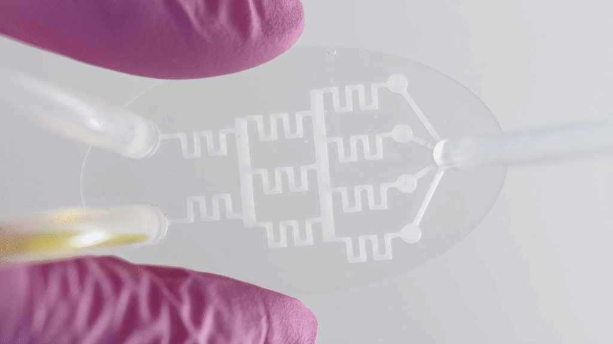
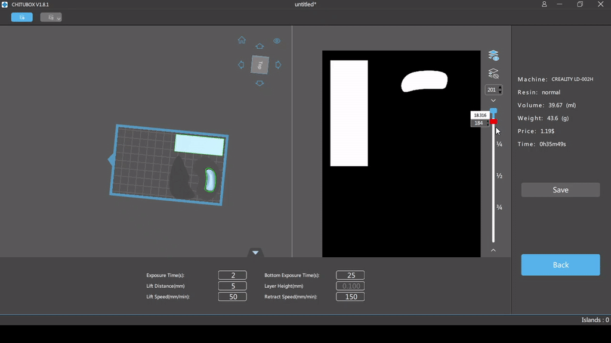
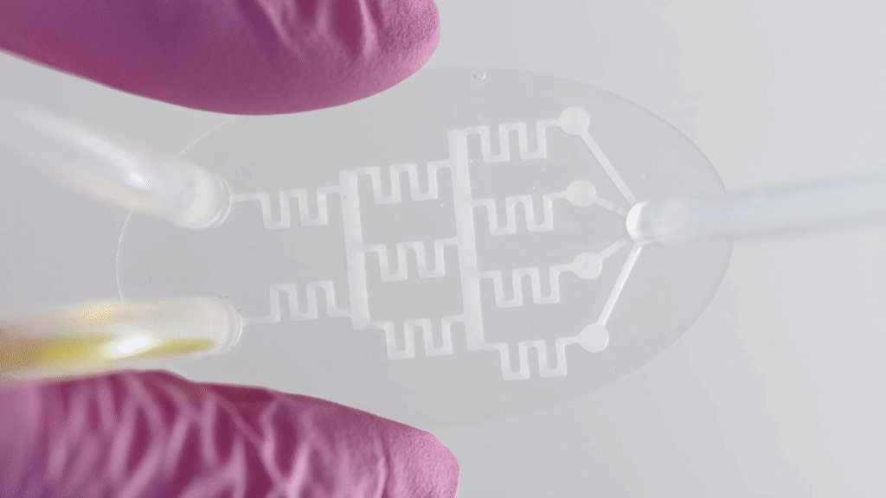
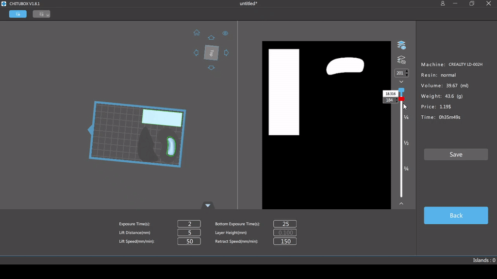

open projects
MIYA
ZAKI
Computational Geometry Expert · Mechatronics Engineer · Designer · Web Developer
I am fascinated to how geometry can recreate our world in the virtual environment and to how humans interact with this boundless reconstructed space. When we seamlessly interface the virtual to our physical reality, we unlock the ability to transform our wildest dreams into tangible experiences. For instance, we can model an organoid in the computer and 3D print it; we can look at cells in virtual reality and feel like we have shrunk; and we can see the inside of a car without opening it with X-ray CT.
career
2016
2019
2020
2021
2022
2023
USP
UTokyo
V360
Tissue
GALY
skills
Computational geometry
Ability to virtually recreate our world with numbers and to turn numbers into tangible things:
experience with scanning methods (such as photogrametry, interferometry, and depth cameras); expertise in 2D/3D data processing (such as segmentation algorithms, mesh reconstruction, ICP, etc.); skills to develop my own CAD/CAM (using threejs or c++); familiarity with gcode and slicing (for 3D printers) and motion planning algorithms; knowledge in VR apps/videos development (unity, threejs, 360 cameras) capacity to develop machine learning models, especially for computer vision (such as object classificators and OCR);
﹀
Software Development
Capacity to transform my ideas into virtual products:
familiarity with various programming languages (python, C, C++, C#, Ruby, etc.) and ease of learning new ones; ability to design beautiful frontend apps (with html, CSS, React, Bootstrap, Javascript, threejs); backend framework (such as Rails, Flask, Node) and database (SQL) skills; ability to run my app in the cloud platforms (AWS and google cloud) and set up the cloud environment (with docker or vm); capacity to develop computer apps and create installable files (winforms, unity, pyinstaller, inno setup); experience developing programs collaboratevely (git, github, google colab, VScode Live Share)
﹀
mechanical design and production
Capacity to turn my ideas into tangible products:
skills on CAD/CAM software (such as Fusion360 and openscad) and ability to combine techniques (scanning, coding, modeling) to create organic complex shapes; experience prototyping using 3D printers (FDM and SLA); familiarity with manufacturing techniques (molding and casting, laser cut, CNC machine); knowledge to develop precise machines for sterile environments
﹀
actuators, sensors & control systems
Ability to make my machine move, sense, and respond in the cheapest and most optimized way:
Capacity to design electromechanical devices, pneumatic systems and other fluidic circuits. Basic knowledge in electronics such as Prototyping platforms (arduino, RaspPi) and PCB design and fabrication. Strong theoretical system control knowledge. Experience working with a wide variety of sensors and actuators.
﹀

organ-on-a-chip

web cad/cam

bioreactors

bioprinters

VR video

cell analysis
data logger

automation
platform

AI
cashier

teeth scan
and Segmentation

mug

covid map

Mechatronics

 





volunteering
During college, Lucas participated in numerous volunteer work. As his education was completely funded by the government, Lucas wanted to do something in return to society. His most relevant work includes: a project for the elderly's psicomotor stimulus; a basic computer usage course for the community around USP; a support for foreign students and Brazilian student who wanted to study abroad; a math, english and art class for kids in a poor community; and a summer camp for teenagers.
Lucas co-founded and lead the Maduros project. The team went regularly to a nursing house to play songs, talk, and do stimulating activities such as painting, crafting, and games. The team also talked to many experts in the field to understand the best types of activities.
Lucas was an instructor at the Poli Cidada project. Lucas taught basic computer usage to USP employees and other people who lived close to the university. The course included how to turn on/off the computer, how to deal with bugs, how to navigate the browser, how to use word, power point, excel, and google drive, how to avoid virus and malicious programs.
Lucas was also part of iPoli, an international club that helped foreign students. Among his responsabilities, Lucas organized events such as welcome day - to explain about the university and life in Brazil, a city tour week, a bureaucracy day - to help the students with all the needed documents, an international night to connect brazilian people to exchange students, parties, trips, and lectures with tips of how to pass at an exchange program. Lucas also created an HR department in the group to engage members and organize the team.
Lucas spent 2 months in Barranquilla (Colombia) teaching math, english, and arts to children and a poor community. Lucas also helped organizing events at Fundacion Amor Fiel. Lastly, Lucas worked as summer camp staff during january at acantonavolley for 5 years. He organized games and took care of kids and teenager between 6 to 19 years old.